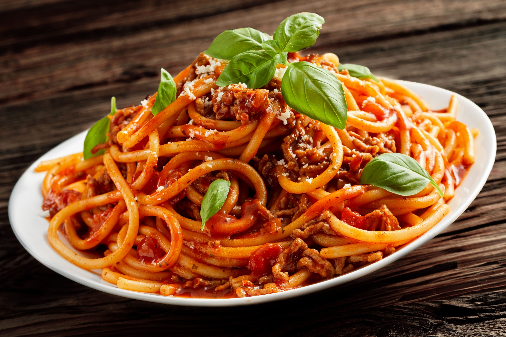

Spaguetti

Spaghetti is a long, thin, solid, cylindrical pasta. It is a staple food of traditional Italian cuisine. Like other pasta, spaghetti is made of milled wheat, water, and sometimes enriched with vitamins and minerals. Italian spaghetti is typically made from durum-wheat semolina.
Ingredientes
- 1 paquete de espagueti
- 1/4 de crema agria
- taza de puré de jitomate
- 1/4 de mantequilla
- 1 cubo de sazonador de pollo
- Queso parmesano
- Sal y pimienta al gusto
Preparación
- Hierve 2 litros de agua y, cuando esté en su punto, agrega 2 cucharadas de sal. Posteriormente, cuece la pasta hasta que esté blanda.
- Retira del fuego, cuela la pasta y desecha el agua.
- Hierve el puré de jitomate a fuego lento y añade la crema, la mantequilla y el cubo sazonador.
- Vierte el espagueti en la salsa y mezcla.
- Sirve. Espolvorea con el queso parmesano al gusto.